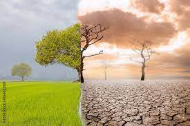
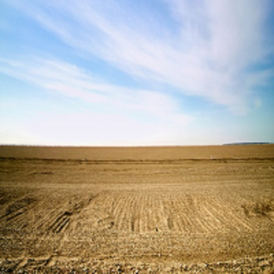
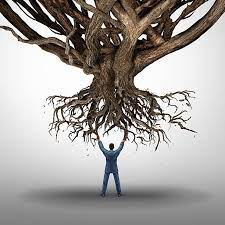
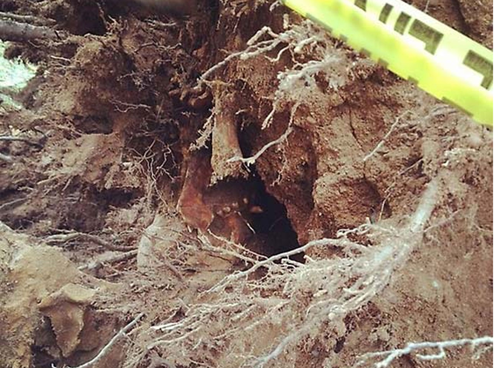
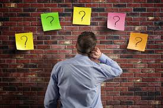
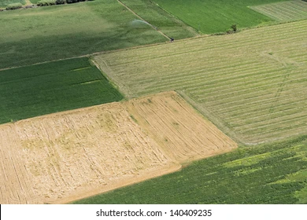

|  | Life is like a soil |
The beginning (Birth - Maturity) |
 |
When we are born in this world our life is like a barren land with nothing on it, no plants living on it even grass nor weeds. At this moment we also dont have the control to our soil due to our young age. Suddenly, our soil will be cultivated by people around us; our family whom we grown out with. They are the one responsible on the things planted on our soil and even the cultivation of our soil. This is the reason that whatever we see with our family i.e. values, culture, perspective and mindset became innate in us. For we cannot control the plants which will be planted on us since we are young. Imagine a seed of insecurity planted on us at an early age and we only realize that we became and ready take care of our soil. As the principle of sowing and reaping, the seed of insecurity will continue to grow on our soil and will become a tree then it will yield more fruits and from the fruits are seeds will again be planted on us. As time goes by more trees of insecurity are planted on us without our control. Thats why there are moments that we sometimes can seem to understand our ownself just because we are unaware of the things planted on us.
|  | Uprooting |
As we grow older, year by year we learn how to stand on our own; decide on our own; think on our own; and move on our own. At this stage, we realize that we are responsible of the things which should be planted on our soil. But at this moment many values, perspective and mindset are already affecting us which through the years became part of our life. This plants are already full grown trees. This is the reason why people have disagreements because they tend to protect their own values which they think are right. Imagine these are already deeply rooted in us. But sometimes we realize that whatever we have learned from our younger age are not really right. This is when we became educated and learned things which will invalidated our old beliefs. When this happens, we need to cut down those trees on our soil or the ultimate solution is to uproot them from us. Uprooting takes time and effort. It is often painful and will create unwanted marks on our soil. It could also affect other nearby plants causing them to be uprooted also. Up to this moment, we become so stress that it could feel like its the end of the world for us. We have bear the pain in order to gain. Try to imagine the pain of removing a tooth with large root from our gums. (without anestesia)
Filling up |
 |
Once uprooting is done, it will leave a great mark on the soil proportional to size of the plant being uprooted. Since we are old enough and ready for the responsibility on our soil, we can now pick the appropriate plants to grow in us. We can now choose our own plant for our purpose. We need to fill up the space left by the uprooting process.
|  | The choice is ours |
It is now our choice of what to do with our life. It is up to us choose for whatever we want in our soil whether we cultivate and sow more seeds on it or uproot other unwanted plants or we just let grass and weeds grown on it. We become more knowlegeable and capable in controlling our own lives. At the end of the day its our soil and whatever we do with it will either make us or break us.
We are part of a larger soil |
 |
As it is said, no man is an island thus we could not live just on our own but we will always be affected by others. In the early part of our lives, we became the soil that we are because of the influence around us. Most of our values and perspective in life are combination of our parents, siblings and chilldhood friends outlook in life. Unconciosuly, they are not aware that they also became part in us. Same goes with us, we could unconciously influence others through our actions. We either bring life to others or death unto them. We might be thinking that it is not a big deal for us but for others it is. We might have planted seeds to our neightbor's soil. Better if the seeds will bring good fruits then our neighbor will show gratitude on us. But what if its a curse? So we should be mindful of others as it is said we reap what we sow.
"Sow righteousness for yourselves,
reap the fruit of unfailing love,
and break up your unplowed ground;
for it is time to seek the LORD,
until he comes and showers his righteousness on you."
- Hosea 10:12